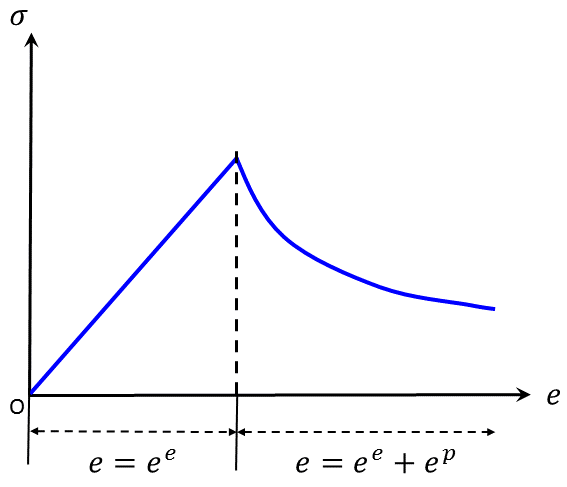
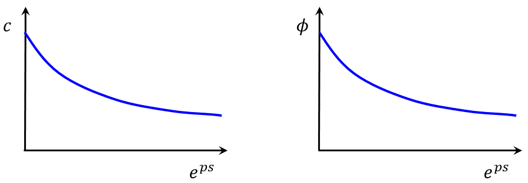
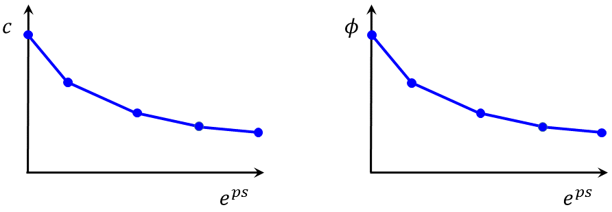

应变软化/硬化 Mohr-Coulomb（SSoft）模型
该模型基于 Mohr-Coulomb 模型（Mohr-Coulomb model），采用前述非关联剪切流动法则与关联拉伸流动法则。不同之处在于：塑性屈服开始后，黏聚力、摩擦、剪胀与抗拉强度可能软化或硬化。在 Mohr-Coulomb 模型（Mohr-Coulomb model） 中这些性质假定保持不变。此处用户可把黏聚力、摩擦与剪胀定义为某个度量塑性剪应变的硬化参数的分段线性函数；抗拉强度的分段线性软化法则也可用另一个度量塑性拉应变的硬化参数规定。程序在每个时步递增硬化参数以计量总塑性剪切应变与拉伸应变，并使模型性质符合用户定义的函数。
公式
屈服函数与势函数、塑性流动法则以及应力修正均与 Mohr-Coulomb 模型（Mohr-Coulomb model） 相同。
硬化参数
该模型的两个硬化参数（\({\kappa}^s\) 与 \({\kappa}^t\)）分别定义为网格单元塑性剪切应变与拉伸应变的某种增量度量的累积。网格单元剪切与拉伸硬化增量按网格单元所含全部四面体上硬化增量的体积平均计算。
某四面体的剪切硬化增量是该步塑性剪切应变增量张量第二不变量的度量，给出为
其中 \(\Delta {\epsilon}_m^{p_s}\) 为平均塑性应变增量，
四面体拉伸硬化增量为塑性拉应变增量的大小，
塑性应变增量
上式中涉及的塑性应变增量可由流动法则的定义 \(\Delta {\underline{\epsilon}}_i^p = \lambda {{\partial g}\over{\partial {\underline{\sigma}}_i}}\) 导出，其形式为
其中 \({\lambda}^s\) 与 \({\lambda}^t\) 由 Mohr-Coulomb 模型（Mohr-Coulomb model） 给出。
黏聚力、摩擦、剪胀与抗拉强度的用户定义函数
网格单元屈服参数的用户定义函数可通过反分析材料的破坏后行为确定。考虑一维应力-应变曲线 \(\sigma\) 对 \(\epsilon\)，它在屈服后软化并达到某一残余强度（图 1（Figure 1））。


图 1：应力-应变曲线示例。
该曲线直到屈服点之前为线性；在该区间内应变仅为弹性：\(\epsilon = \epsilon^e\)。屈服后总应变由弹性与塑性部分组成：\(\epsilon = \epsilon^e + \epsilon^p\)。在软化/硬化模型中，用户把黏聚力、摩擦、剪胀与抗拉强度的变化定义为总应变中塑性部分 \(\epsilon^p\) 的函数。这些函数实际上可如 图 2（Figure 2） 所示绘制，在 FLAC3D 中以若干线性段逼近（图 3（Figure 3））。


图 2：黏聚力（a）与摩擦角（b）随塑性应变的变化。


图 3：用线性段近似。
黏聚力、摩擦与剪胀随剪切参数 \(\Delta \epsilon^{ps}\) 的硬化与软化行为（见公式 (1)）由用户以表格形式提供。每个表格含数值对：一个为参数值，一个为相应性质值。假定性质在表格中两个相邻参数条目之间线性变化。抗拉强度的软化以类似方式用参数 \(\Delta \epsilon^{pt}\) 描述（见公式 (2)）。
实现步骤
FLAC3D/3DEC 中应变软化/硬化模型的实现按 Mohr-Coulomb 模型（Mohr-Coulomb model） 说明所述进行。确定该步的新应力后，按上述流程更新网格单元的硬化参数。若适用，随后用这些参数确定网格单元黏聚力、摩擦、剪胀与抗拉强度的新值。
注意材料抗拉强度只能降低。此外对有摩擦的材料，该值不能超过最大值 \({\sigma}_{max}^t\)。
strain-softening 模型性质
用以下关键字配合 :设置网格单元属性（zone property）（FLAC3D）或 设置块体网格单元属性（block zone property）（3DEC）命令设置应变软化/硬化 Mohr-Coulomb 模型的这些性质。
- strain-softening
- bulk f
弹性体积模量，\(K\)
- cohesion f
黏聚力，\(c\)
- friction f
内摩擦角 \(\phi\)
- poisson f
泊松比，\(\nu\)
- shear f
弹性剪切模量，\(G\)
- young f
杨氏模量，\(E\)
- flag-brittle b (a)
若为真，则在发生拉伸破坏时把拉伸极限设为 0。默认为 false。
- table-cohesion s (a)
把黏聚力与塑性剪应变关联的表格名称
- table_dilation s (a)
把剪胀角与塑性剪应变关联的表格名称
- table-friction s (a)
把摩擦角与塑性剪应变关联的表格名称
- table-tension s (a)
把抗拉极限与塑性拉应变关联的表格名称
- strain-shear-plastic f (r)
累计塑性剪应变
- strain-tension-plastic f (r)
累计塑性拉应变
图例
- (a) 高级属性。
- 该属性具有默认值；在较简单的模型应用中，无需专门赋值。
- (r) 只读属性。
- 该属性不能由用户设置，但可以列出、绘图显示，或通过 FISH 访问。
注意事项
- 定义弹性只需两种选项之一：体积模量 \(K\) 与剪切模量 \(G\)，或杨氏模量 \(E\) 与泊松比 \(\nu\)。选择后者时，必须先赋予杨氏模量 \(E\) 再赋予泊松比 \(\nu\)。
- 抗拉截断为 \({\sigma}^t = min({\sigma}^t, c/\tan \phi)\)。
- 拉伸表与 flag-brittle 不应同时处于活动状态。
⇐ Anisotropic-Elasticity Ubiquitous-Joint Model | Bilinear Strain-Softening/Hardening Ubiquitous-Joint (SUBI) Model ⇒
| 这些内容对您有帮助吗？… | FLAC3D © 2019, Itasca | 原文更新于 2020 年 10 月 8 日 |